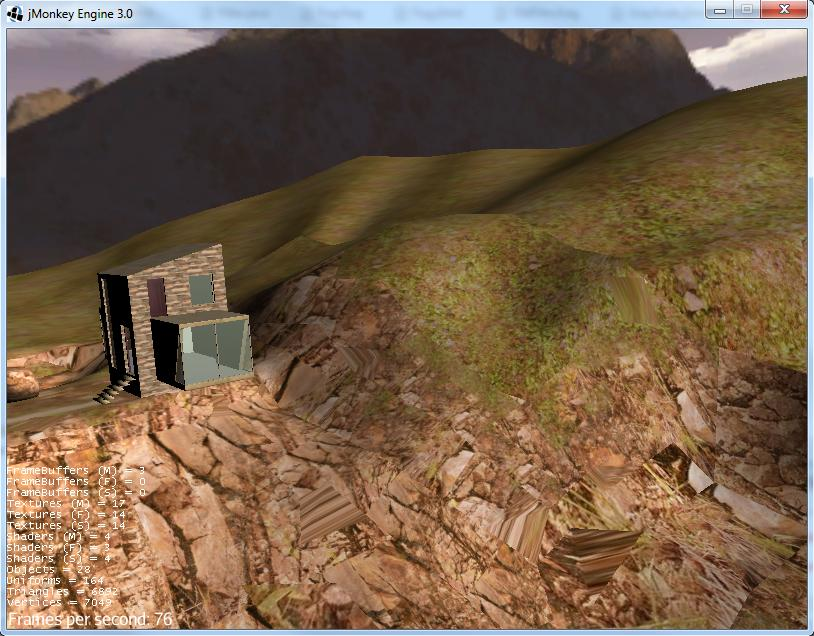
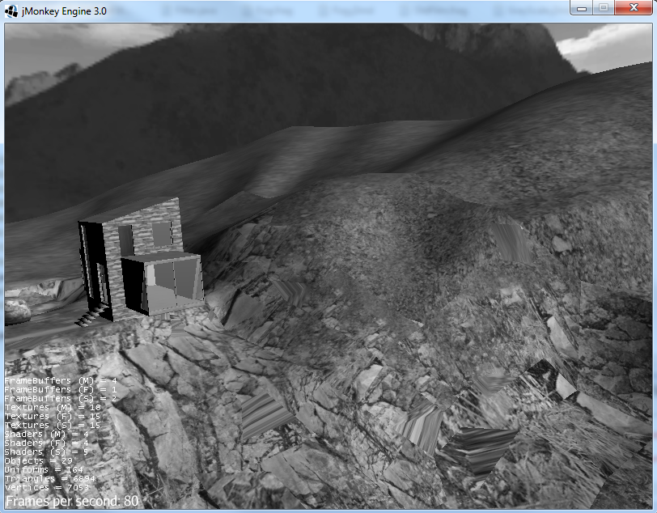

Collections of effects for jMonkeyEngine 3. To install the ShaderBlow plugin into the jMonkeyEngine SDK, go to Tools→Plugins→Available Plugins. You can always get the source of ShaderBlow project here: ShaderBlow project Github
The source has many examples and tests to explain the capacity of shaders much better.
Filters:
Basic SSAO
ColorScale (added by @H)
GrayScale (added by @H)
Simple Refraction (added by @mifth)
Old Film Effect (added by @H)
Night Vision (added by @wezrule)
Predator Thermal Vision (added by @wezrule)
Frosted Glass effect (added by @wezrule)
Shaders
Dissolver (added by @thetoucher)
FakeParticleBlow (added by @mifth)
Forceshield (added by @ficik)
MatCap (added by @mifth)
Glass (added by @mifth)
Texture Bombing (added by @wezrule)
Official Forum: https://hub.jmonkeyengine.org/forum/t/shaderblow-project/26655 Or you can use the forum threads of shaders. |
ColorScale Filter
The ColorScale filter applys a color to the render image. You can use this filter to tint the render according to one particular color without change any material (underwater scene, night scene, fire scene) or to achieve fade-in/fade-out effect.
Features:
Allow to set the color to apply. Default is red.
Allow to set intensity of the color. Default is 0.7f. Frag shader clamps color intensity between 0 and 1.
|
|
|
|


Usage
Add a ColorScaleFilter instance to a FilterPostProccesor instance. Set color and color intensity. Then add the FilterPostProccesor instance to Application’s viewPort attribute.
this.fpp = new FilterPostProcessor(this.assetManager);
this.fpp.setNumSamples(4);
this.colorScale = new ColorScaleFilter();
this.fpp.addFilter(this.colorScale);
// colorScale.setFilterColor(ColorRGBA.Red.clone()); // Set Filter color
// colorScale.setColorDensity(0.5f); // Set Color intensity (between 0 and 1);
this.viewPort.addProcessor(this.fpp);GrayScale Filter
The GrayScale filter converts the render image to grayscale.
| GrayScale Filter OFF | GrayScale Filter ON |
|---|---|
 |  |
Usage
Add a GrayScaleFilter instance to a FilterPostProccesor instance. Then add the FilterPostProccesor instance to Application’s viewPort attribute.
this.fpp = new FilterPostProcessor(this.assetManager); // Create FilterPostProcessor instance
this.grayScale = new GrayScaleFilter(); // Create GrayScaleFilter instance
this.fpp.addFilter(this.grayScale); // Add GrayScaleFilter instance to FilterPostProcessor instance
this.viewPort.addProcessor(this.fpp); // Add FilterPostProcessor instance to ViewPortOld Film Effect Filter
Old Film filter simulate the effect of a classic looking film effect. It’s a port of this shader effect.
Features:
Allow to set the filter’s color. Default is sepia (ColorRGBA(112f / 255f, 66f / 255f, 20f / 255f, 1.0f)).
Allow to set the color’s density. Default is 0.7. Shader clamps this value between 0 to 1. The color image gets grayscale when color’s densite is set to 0.
Allow to set the noise’s density. Default is 0.4. Shader clamps this value between 0 to 1.
Allow to set the scratches' density. Default is 0.3. Shader clamps this value between 0 to 1.
Allow to set the vignetting’s diameter. Default is 0.9. Shader clamps this value between 0 to 1.4. Vignetting effect is made using two circles. The inner circle represents the region untouched by vignetting. The region between the inner and outer circle represent the area where vignetting starts to take place, which is a gradual fade to black from the inner to outer ring. Any part of the frame outside of the outer ring would be completely black.
I chose to clamp this value inside the frag shader code instead of using java code because I thought this way is faster (better from preformace point of view). You can clamp this values using java code if you want. |
Old Film Effect
|

Usage
Add a OldFilmFilter instance to a FilterPostProccesor instance. Then add the FilterPostProccesor instance to Application’s viewPort attribute.
this.fpp = new FilterPostProcessor(this.assetManager); // Create FilterPostProcessor instance
this.oldFilmFilter= new OldFilmFilter(); // Create OldFilmFilter instance
this.fpp.addFilter(this.oldFilmFilter); // Add OldFilmFilter instance to FilterPostProcessor instance
this.viewPort.addProcessor(this.fpp); // Add FilterPostProcessor instance to ViewPortLightBlow Shader
The Lightblow shader is an improved Lighting shader for JME.
Features:
Improved lighting calculations.
Improved reflection calculations.
Reflection map implementation with alpha normal map.
Improved Minnaert calculations.
Hemispherical lighting.
Image Based Lighting with Albedo.
Emissive map implementation with diffuse alpha.
normalization of normals by default.
Specular map implementation with normal map alpha.
Specular intensity implementation.
Switching -x/-y/-z normals for different normal maps. (3dmax, blender, xnormal have different approaches).
Specular Color now works with specular maps
Glowblow fragment shader is added with m_GlowIntensity? uniform. It’s possible to change glow intensity for objects. Please, use DiffuseMap? as GlowMap? instead of new additional Glow rgb texture.
Lightmaps are added.
Rim Lighting is added. Thanks to Thetoucher from JME Blog!
Fog is added. Fog is used without post-processing!
Texture Blending: 4 diffuse, 4 normal textures can be blended (Like Terrain System).
Software for NormalMaps? making: http://shadermap.com/shadermap_pro.php
Software for CubeMaps? editing: https://code.google.com/archive/p/cubemapgen/downloads
Watch following videos:
LightBlow Shader
|

Dissolver Shader
The Dissolve Shader uses a simple grey scale image as an animated mask to hide a material.
The shader incrementally clamps off the colour value, dark to light, and uses that for a masking texture to discard pixels. It is currently capped for convenience at 255 frames of animation and is only using one colour channel. In simple terms, in starts by only discarding the darkest parts of the texture map, then the slightly lighter parts, then the slightly lighter again and again until it eventually cant get any lighter (white), at which point the proccess is complete.
|
|


Starting at the top left we have: simple linear dissolve, organic dissolve and pixel dissolve. And bottom row: organic growth, texture masking, organic burn. Mask texture maps on the second image.
The test is occolating the dissolve amount between 0 and 1. It demonstrates 6 different uses for the shader, all running at the same speed. The top row are straight forward dissolves. The bottom row shows 3 potential applications:
Organic Growth (bottom left) over a mesh, this could work both animating rapidly for a fast grow effect, or set to a fixed value e.g. set to 0.5f is “50% covered in growth”;
Texture Masking (bottom middle) , I see this is probably where the most practical applications will come from. The demonstration shows a poorely photoshoped clean street, peices of garbage are then scattered around dependant on the dissolve amount, this would work best with a fixed value eg set to .75 is “75% dirty”. Texture Masking could be also be used for:
paint damage on a car;
lacerations on a character;
the blood shot eye effect that creeps in from the sides of the screen when you’ve taken too much damage in a modern FPS.
Organic Burn (bottom right) is comprised of 2 cubes, one blue, one orange, both with the same organic dissolve, however the orange one is slightly offset ahead of the blue so it shows first (ie the dissolve amount is always slight advanced).
Watch following videos:
GLSL Dissolve Shader
| mTheoryGame
|

Usage
The shader requires 2 parameters:
a Texture2D texture map to use as the dissolve map; and
a Vector2 of internal params params:
the first is a float value being the amount of dissolve, a value from 0-1 : 0 being no dissolve, being fully dissolved; and
the second value is an int use as an inversion switch, 1 to invert the dissolve/discard, 0 to leave as is.
Dissolver is based on Common/MatDefs/Lighting.j3md. So, all Common/MatDefs/Lighting.j3md features should be available on the dissolver too. |
// Create a material instance using ShaderBlow's Lighting.j3md
final Material mat = new Material(this.assetManager, "ShaderBlow/MatDefs/Dissolve/Lighting.j3md");
mat.setColor("Ambient", ColorRGBA.Blue);
mat.setColor("Diffuse", ColorRGBA.White);
mat.setColor("Specular", ColorRGBA.Black);
mat.setBoolean("UseMaterialColors", true);
this.assetManager.loadTexture("TestTextures/Dissolve/burnMap.png", mat.setTexture("DissolveMap", map); // Set mask texture map
this.DSParams = new Vector2f(0, 0); // standard dissolver
//this.DSParamsInv = new Vector2f(0, 1); // inverted dissolver
mat.setVector2("DissolveParams", this.DSParams); // Set params
final Box b = new Box(Vector3f.ZERO, 1, 1, 1);
final Geometry geom = new Geometry("Box", b);
geom.setMaterial(mat);FakeParticleBlow Shader
Effect for fire or engine of a ship. Such an effect is used in the “Eve Online game for ship engines.
Features:
GPU animation (now you don’t need simpleUpdate(float tpf) for the shader). Animation is made displacing the texture according to X and/or Y axis.
X and/or Y animation direction. No animation is supported also.
Animation direction changer. By default the Y axis animation’s direction is up-to-down and the X axis animation’s direction is right-to-left.
Allow to set animation speed.
Allow to set mask texture in order to set particle shape.
Allow to set particle color.
Allow to set fog color. Fog color is applyed to the material using for color’s alpha value as fog distance factor.
| Fog applied to blue fire
|


FakeParticleBlow Shader
|

Usage
Create a material (by SDK or by code) using FakeParticleBlow.j3md. Set material’s parameters and set the material to a spatial.
Most of the cases the spatial will be 4 to 10 planes in the same location but rotated on Y axis using different angles for each plane. Something similar to this:

Remenber to set the queue bucket to transparent for the spatial. |
// Create the material
final Material mat = new Material(this.assetManager, "ShaderBlow/MatDefs/FakeParticleBlow/FakeParticleBlow.j3md");
// Create the mask texture to use
final Texture maskTex = this.assetManager.loadTexture("TestTextures/FakeParticleBlow/mask.png");
mat.setTexture("MaskMap", maskTex);
// Create the texture to use for the spatial.
final Texture aniTex = this.assetManager.loadTexture("TestTextures/FakeParticleBlow/particles.png");
aniTex.setWrap(WrapMode.MirroredRepeat); // NOTE: Set WrapMode = MirroredRepeat in order to animate the texture
mat.setTexture("AniTexMap", aniTex); // Set texture
mat.setFloat("TimeSpeed", 2); // Set animation speed
mat.setColor("BaseColor", ColorRGBA.Green.clone()); // Set base color to apply to the texture
// mat.setBoolean("Animation_X", true); // Enable X axis animation
mat.setBoolean("Animation_Y", true); // Enable Y axis animation
mat.setBoolean("Change_Direction", true); // Change direction of the texture animation
mat.getAdditionalRenderState().setFaceCullMode(FaceCullMode.Off); // Allow to see both sides of a face
mat.getAdditionalRenderState().setBlendMode(BlendMode.Additive);
final ColorRGBA fogColor = ColorRGBA.Black.clone();
fogColor.a = 10; // fogColor's alpha value is used to calculate the intensity of the fog (distance to apply fog)
mat.setColor("FogColor", fogColor); // Set fog color to apply to the spatial.
final Quad quad = new Quad(3, 3); // Create an spatial. A plane in this case
final Geometry geom = new Geometry("Particle", quad);
geom.setMaterial(mat); // Assign the material to the spatial
TangentBinormalGenerator.generate(geom);
geom.setQueueBucket(Bucket.Transparent); // Remenber to set the queue bucket to transparent for the spatialTo get green/yellow/blue fog (not transparency):
mat.getAdditionalRenderState().setBlendMode(BlendMode.AlphaAdditive);
final ColorRGBA fogColor = ColorRGBA.Blue.clone();Several planes geometries will be required as there will be AlphaAdditive material.
Forceshield Shader
Forcefield shader adds shield effect to a spatial. The spatial will be a sphere most of the cases, but box or oval should be possible to use. Only problem is that it has to be higher-poly because distace is calculated from vertex.
Hits are registred as contact point position using this control and effect animation is based on distance from contact point and time. Max number of hits displayed is 4.
Features:
Allow to set texture of the shield.
Allow to set color of the shield.
Allow to set minimal visibility (similar to alpha value). Default is 0, that means shield is no displayed, only hit animations.
Allow to set effect duration. Default is 0.5s.
Allow to set effect size. Default is 1.
Allow to enable/disable hit animations.
Forceshield Shader
| Forceshield Cube Shader
|


Usage
Create a Spatial instance. Create a ForceShieldControl instance. Add the control instance to the spatial.
If you experience problems, try higher polygon object. |
// Create spatial to be the shield
final Sphere sphere = new Sphere(30, 30, 1.2f);
final Geometry shield = new Geometry("forceshield", sphere);
shield.setQueueBucket(Bucket.Transparent); // Remenber to set the queue bucket to transparent for the spatial
// Create ForceShieldControl
this.forceShieldControl = new ForceShieldControl(this.assetManager, 0.5f);
shield.addControl(this.forceShieldControl); // Add the control to the spatial
this.forceShieldControl.setEffectSize(2f); // Set the effect size
this.forceShieldControl.setColor(new ColorRGBA(1, 0, 0, 3)); // Set effect color
this.forceShieldControl.setVisibility(0.1f); // Set shield visibility.
// Set a texture to the shield
this.forceShieldControl.setTexture(this.assetManager.loadTexture("TestTextures/ForceShield/fs_texture.png"));
// this.forceShieldControl.setEnabled(false); // Enable, disable animation.Use forceShieldControl.registerHit(final Vector3f position) method to register a hit.
final CollisionResults crs = new CollisionResults();
this.rootNode.collideWith(new Ray(this.cam.getLocation(), this.cam.getDirection()), crs);
if (crs.getClosestCollision() != null) {
// Register a hit
this.forceShieldControl.registerHit(crs.getClosestCollision().getContactPoint());
}MatCap Shader
MatCap shader will be very useful for scrollshooters to imitate different materials like glass, gold, metals. The shader does not use any lights, only one texture.
Features:
Fog color and fog skybox.
Toon edge effect.
Multiply color: set a color to change texture’s color.
Normal map.
|
|
|
|


Usage
Create a material (by SDK or by code) using MatCap.j3md. Set material’s parameters and set the material to a spatial.
Remember to add a DirectionalLight if you want to use toon edge effect. |
Material My Material : ShaderBlow/MatDefs/MatCap/MatCap.j3md {
MaterialParameters {
DiffuseMap : Flip TestTextures/matcaps/met2.png
Nor_Inv_Y : true
Nor_Inv_X : false
Nor_Inv_Z : false
NormalMap : TestModels/LightBlow/jme_lightblow_nor.png
FogSkyBox : Flip TestTextures/Water256.dds
Toon : true
EdgesColor : 1.0 0.0 0.0 1.0
EdgeSize : 0.01
Fog_Edges : true
}
AdditionalRenderState {
}
}Glass Shader
Features:
Fog color and fog skybox.
Toon edge effect.
Multiply color: set a color to change texture’s color.
Normal map.
|
|


Usage
Create a material (by SDK or by code) using Glass.j3md. Set material’s parameters and set the material to a spatial.
Remember to add a DirectionalLight if you want to use toon edge effect. |
Material My Material : ShaderBlow/MatDefs/Glass/Glass.j3md {
MaterialParameters {
RefMap : Flip TestTextures/Water256.dds
Multiply_Color : 1.1 1.5 1.1 1.0
colorIntensity : 0.79999995
Nor_Inv_Y : true
NormalMap : TestModels/LightBlow/jme_lightblow_nor.png
ChromaticAbberation : true
abberIndex : 0.04
specularIntensity : 0.59999996
Toon : true
EdgesColor : 0.2 1.0 0.0 1.0
EdgeSize : 0.01
Fog_Edges : true
}
AdditionalRenderState {
}
}SimpleRefraction PostProcessor/Filter
Features:
Cool refraction effect
SimpleRefraction PostProcessor
|


Electricity Shaders
SimpleSprite Shader
Bubble Shader

SimpleSpriteParticle Shader
Features: static sprite speed: can render 1500000 sprites at 149 fps ( 0% cpu load, speed limited only by graphics card ). As long as you don’t change them (add, move, delete, change image). FULL LIBRARY PLUGIN: http://code.google.com/p/petomancer/downloads/detail?name=SpriteLibrary.zip&can=2&q=

Texture Bombing
Features:
Applying random images from a texture atlas to a model by dividing up the model’s UV textures into cells.
GLSL Texture Bomb
|

Night Vision
Features:
Apply a mask (Binoculars) and color to emulate night vision mode.
Night Vision Post Processor
|

Predator Thermal Vision
Features:
Changes the color in the scene to emulate the predator thermal vision effect
Predator Thermal Vision
|

Frosted glass effect
Features:
Displays a frosted glass effect over the current scene
Frosted Glass effect Filter
|